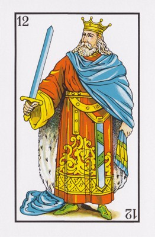
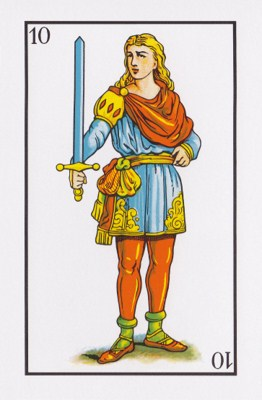
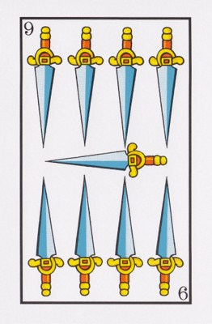
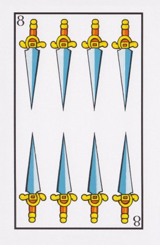
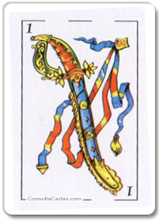

<DOCTYPE html>
<html>
    
<head>   
<meta charset="utf8">
<title>Cartas</title>   
<style>   
    img     {width: 245px; height: 330;}
    
     body {background-image: url(images/cartas-del-tarot.jpg); background-repeat: no-repeat;
            background-attachment: fixed;}
    
    #envoltorio {   
         position: absolute; left: 500px;
    }
        
    /* Posicionamos las cartas, con z-index indicamos la capa que ocupará y con transform giramos algunas cartas */
    .Card1, #Card1  {z-index: 10; top: 20px; left: 100px; position: absolute;  -webkit-transform: rotate(-19deg); /* Chrome, Safari, Opera */;} 
    .Card2, #Card2  {z-index: 10; top: 60px; left: 200px; position: absolute;  }   
    .Card3, #Card3  {z-index: 10; top: 100px; left: 300px; position: absolute;  }
    .Card4, #Card4  {z-index: 10; top: 150px; left: 400px; position: absolute;  }    
    .Card5, #Card5  {z-index: 10; top: 160px; left: 500px; position: absolute;   -webkit-transform: rotate(19deg); /* Chrome, Safari, Opera */;}
    
    /* oculta el reverso de la carta al pasar sobre ella */
    #Card1:hover, #Card2:hover, #Card3:hover, #Card4:hover, #Card5:hover {z-index: -1;}
    
    /* Mostra la carta al pasar sobre ella: para ello usamos z-index con un numero alto*/
    .Card1:hover, .Card2:hover, .Card3:hover, .Card4:hover, .Card5:hover {z-index: 100; 
            border-style: solid; border-color: red;}
    
    /*------ Efectos de animación sobre la carta AS de Espada  -------------*/
    /* 2.5s son los segundos que durará la rotación y "ease", el tipo de rotación /*/
    .card_as {float:right;  clear: right; transition: 2.5s ease;
            border-style: solid; border-color: black;}   
    /* activar la animación cuando el puntero del mouse pase por encima de la imagen */
    .card_as:hover {border-style: solid; border-color: red;-webkit-transform : rotate(360deg); /* Chrome - Safari */}
    
    footer { border-style: solid; border-color: black;padding: 10px;
            position: absolute; bottom: 0; background:#ffab62; width:40%;	height:100px;
            text-align: center; }

</style>
</head>    
  
<body>

<div id="envoltorio">
<section class="Card1"></section>
      
  
<section class="Card2"></section>
    
    
<section class="Card3"></section> 
   
    
<section class="Card4"></section> 
   
    
<section class="Card5"></section>
   

</div>
    <section class="card_as"></section> 
    <footer>Pruebas con <em>z-index</em> y <em>transform</em> para generar efectos de animación</footer>
</body>
    
</html>